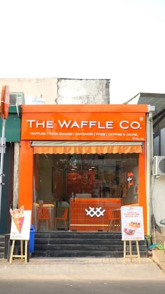

The Belgian Waffle Co is a dessert restaurant in Malviya Nagar known for its freshly prepared waffles, chocolate-filled treats, and dessert beverages. Customers often enjoy the warm, crispy waffles and quick preparation, while reviews on topping portions, consistency, and service experience are mixed.
Contact and location
- Address
- Shop No 4, Ground Floor, Bhalla Sadan, Building No 17, Saket, New Delhi, Delhi 110017, India
- Phone
- +91 86578 91043
- Website
- Visit site
More food & cafes nearby
- Giani ice creamIce cream shop
- CHILL-E-PEPPERFast food restaurant
- Rose CafeCafe
- Sagar RatnaSouth Indian restaurant